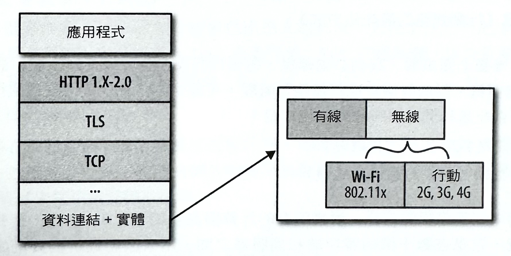
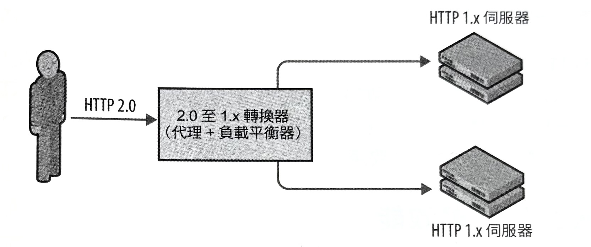
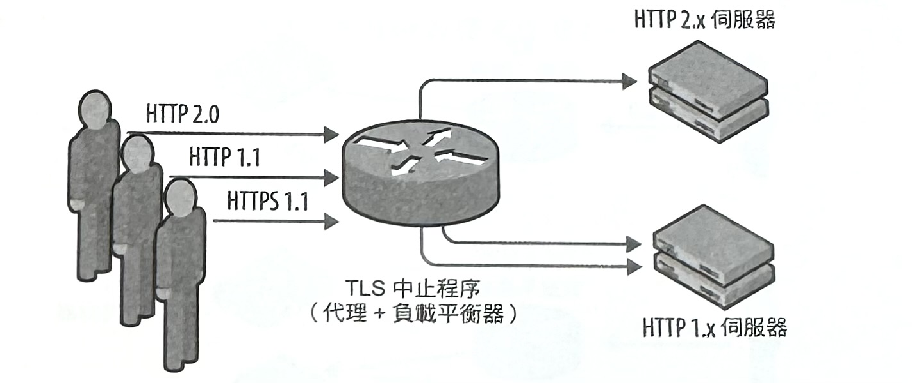
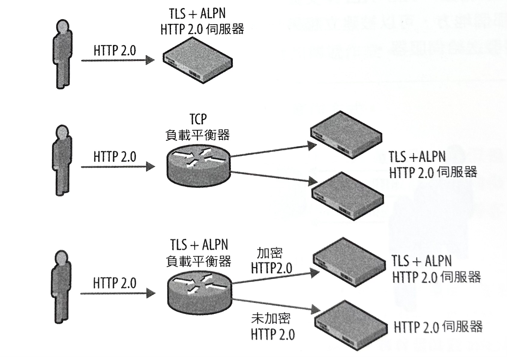

1-4-6 HTTP-應用程式傳輸最佳化
高效能瀏覽器網路傳輸作業仰賴一連串的網路傳輸技術（如圖-1），而我們的應用程式的整體效能是它們每一部份的總和結果。
我們無法控制客戶端和伺服器之間的多變網絡狀況，也無法控制客戶端硬體或它們的裝置設定情況，但其餘的部分就全都掌握在我們的手中了：伺服器上的 TCP 和 TLS 最佳化作業，以及林林總總的應用程式最佳化方式，就是起因於不同實體層的獨特性、所使用的 HTTP 協定版本，以及一般的應用程式最佳慣例。當然，要能運用得宜並不是一件容易的事情，但是卻很值得。讓我們一起來抽絲剝繭一番。
圖-1 ：網頁應用程式傳輸作業的最佳化處理層級

通訊管道的物理特性在每個應用程式上設下了嚴苛的效能限制：光的速度和客戶端與伺服器之間的距離，決定了傳輸延遲時間，而介質的選用（有線與無線）則決定了由每個資料封包所引發的處理程序、傳送作業、佇列處理，以及延遲情況。事實上，大多數網頁應用程式的效能都是受限於延遲（latency），而不是頻寬（bandwidth），而且儘管頻寬速度會不斷提升，但不幸的是，「延遲」的問題卻不會有相同的改善情況。相關細節可參考先前的一些章節內容：
- 《造成延遲的各種因素》。
- 《提供更高的頻寬與較低的延遲》。
- 《延遲成為效能瓶頸的情況》。
因此，雖然我們無法讓位元資料的傳輸速度變得更快，但重要的是，我們會在傳輸和應用層上套用所有可能的最佳化處理方式，以減少不必要的往返和請求情況，並且讓每個封包的傳輸距離降到最低程度—也就是把伺服器擺到更接近客戶端的地方。
每個應用程式都可以透過在延遲較高、頻寬永遠珍貴的無線網路裡頭，針對實體層（physical layer）的獨特屬性所進行的最佳化作業當中得到好處。在 API 層當中，有線和無線網絡之間的差異是相當顯而易見，而忽視它們將會招致低落的效能表現。我們在資源下載、溝通過程，以及其餘部分的處理方式和安排時機上的簡單最佳化處理，可能就會在延遲、電池壽命，和我們的應用程式的整體使用者感受上，造成重大影響：
- 《WiFi 網路的最佳化處理》。
- 《行動網路的最佳化方式》。
從物理層往堆疊上面來看，我們必須確保，每個伺服器都會被設定好去使用最新的 TCP 和 TLS 最佳慣例。對底層協定進行最佳化處理，可確保客戶端在與伺服器進行通訊時，能夠獲得高吞吐量和低延遲時間的最佳效能：
- 《TCP 的最佳化處理》。
- 《TLS 的最佳化處理》。
最後，我們來到應用層的部分。根據所有的計算與測量結果，HTTP 是一套相當成功的協定。畢竟，它是在數十億的客戶端和伺服器之間，用來啟動最新網頁潮流的共通語言。然而，它還只是個不完整的協定，而這意味著我們在應用程式的架構工作上，必須特別留意才行：
- 我們必須解決 HTTP/1.x 的限制。
- 我們必須學會如何以 HTTP/2 來利用新的效能強化機制。
- 我們必須隨時注意，有關長期有效的效能最佳慣例的運用方式。
成功可行的網頁效能策略的訣竅在於「簡單」：先測量，並將執行目標與效能指標結合，而在套用最佳化處理方式之後，更新並執行，接著再反覆進行這些步驟。開發並投資適當的測量工具與應用程式指標，是最優先的處理工作；相關細節請參考《綜合性與真實使用者的效能測量方式》。
長期有效的效能最佳慣例
無論使用哪種網路的類型、或者是哪種網路協定的類型或版本，所有的應用程式通常都應該尋求去刪除或減少不必要的網路延遲，並且讓被傳輸位元組的資料量降到最低的情況。這兩項指標都是可用來當作數十個常見效能規則基礎的長期有效的效能最佳慣例：
-
減少 DNS 查詢
每個主機名稱解析作業，都需要一次的網路往返程序，而在進行查詢作業（lookup）過程中，會增加請求上的延遲，並且會阻斷請求程序。
-
重複使用 TCP 連線
盡可能啟用連線的持續連線狀態（keepalive），來消除 TCP 交握程序和緩步啟動延遲成本；相關細節請參考《緩步啟動（Slow-Start）》。
-
將 HTTP 重導數量降到最低
HTTP 重導作業（redirect）可能會付出很大的代價，尤其是在它們把客戶端重導到不同主機名稱時，所造成額外 DNS 查詢作業、TCP 交握延遲，以及各種無法預料的情況。重導作業的理想數值應該是「0」。
-
使用內容傳輸網路（CDN）
把資料在地理位置上擺放的越接近客戶端，可以大幅降低每次 TCP 連線的網路延遲時間，並提高吞吐量。這項建議同時適用於靜態和動態內容場合；相關細節請參考《未快取原點擷取機制》。
-
刪除不必要的資源
沒有任何請求總比有請求卻沒送出還要來得更快。
-
在客戶端進行資源快取處理
應用程式資源應該被進行快取處理，以避免每次需要相同資源時，得對相同的位元組資料進行重新請求作業。
-
在傳輸過程中對素材進行壓縮處理
應用程式資源應該要以最少的位元組資料量的方式來進行傳輸：總是對每個要被傳輸的素材套用最佳的壓縮方法。
-
刪除不必要的請求位元組資料
減少要被傳輸的 HTTP 標頭資料（如 HTTP cookie）可以省下一整個網路往返的延遲。
-
並行的請求和回應處理作業
在客戶端和伺服器上的請求和回應佇列延遲，通常都會被忽略掉，但它們卻都會帶來顯著且不必要的延遲情況。
-
套用協定專屬最佳化方式
HTTP 1.x 提供的是受限的並行機制，而使得我們得去進行打包資源、將傳輸分散給多個網域，以及其他額外的處理作業。相較之下，HTTP 2.0 只要使用一個單一連線就能有很好的表現，因而可以捨棄掉在 HTTP 1.x 上所使用的特有最佳化策略。
在此，所有的這些建議全都應該不需要再多做解釋才是：「延遲」（latency）是瓶頸之源，而傳輸速度最快的位元組資料，就是連一個位元組資料都不需要發送的情況。此外，HTTP 還提供了許多的額外機制，包括快取程序、壓縮處理，以及它自己所擁有的版本專屬效能技巧：
以上的每一項勢必都需要進一步地調查。讓我們開始來一一瞭解它們吧！
在客戶端進行資源快取處理
最快的網路請求作業，就是連一個請求不需要發送。對先前已下載資料進行快取處理，讓客戶端直接能夠使用本地端的資源複本，進而消除多餘請求作業。針對透過 HTTP 所傳輸的資源，要確保適當的快取標頭已經準備就緒：
- Cache-Control 標頭可以指定資源的快取存活時間（最長時間）。
- Last-Modified 和 ETag 標頭會提供驗證機制。
你應該盡可能地為每個資源去指定一個明確的快取存活時間（cache lifetime），以便讓客戶端能夠使用一個本地端複本，而不是一直對相同的物件進行重新請求。同樣地，指定一項驗證機制，而讓客戶端能夠去檢查逾期的資源是否已被更新：假如資源沒有被更動過的話，我們就可以消除資料的傳輸作業。
最後，請注意到，你得同時去指定快取存活時間和驗證方法！一個常見的錯誤就是，只提供了這兩者當中的其中一個，以致於對沒有更動過的資源進行多餘的傳輸程序（漏掉驗證部分的情況），或者是每次都對使用到的資源進行多餘的驗證檢查作業（漏掉快取存活時間的情況）。
智慧型手機上的網頁快取機制：理想與現實
從 HTTP 協定很早期的版本開始，HTTP 資源的快取機制就一直是首要的效能最佳化方式之一。然而，儘管大家看起來似乎都知道它的好處，但在實際的研究中，還是一直會發現到，它仍然是個常常會被忽略掉的最佳化方式！根據 AT&T 實驗室與密西根大學最近所做的一項共同研究指出：
我們發現到，多餘的傳輸在兩個資料集（dataset）裡頭，個別佔了總 HTTP 流量的 18% 與 20%。而其中還包括了 17% 的位元組資料、7% 的無線電能量消耗量、6% 的訊號傳輸負載，以及 9% 是在第二個資料集裡頭的所有手機資料流量的無資源使用情況。大多數的這類多餘傳輸情況，都是因為智慧型手機的網頁快取實作上沒有完全支援，或謹慎地遵循協定規格，或者是開發者沒有完全運用到程式庫所提供的快取支援能力所造成的。
— 智慧型手機上的網頁快取機制 MobiSys 2012
你的應用程式是否會對不必要的資源一再地進行擷取作業呢？有證據顯示，這並不是個反問句。記得要再三地檢查你自己的應用程式，甚至更好地，加入一些測試來捕捉未來有可能會出現的退化情況。
對傳輸資料進行壓縮處理
運用本地端快取機制（local cache）讓客戶端能夠避免在每個請求上擷取重複的內容。然而，假如，或者當資源本身因為已逾期，或是全新，甚至是無法被進行快取處理的關係，而必須被進行擷取的時候，那麼它應該要以最小的位元組數量來被進行傳送。永遠都要對每個素材或資源，套用最佳的壓縮處理。
像 HTML、CSS，以及 JavaScript 這類文字素材的大小，都可以在搭配 gzip 壓縮時，平均減少 60%~80%。另外，圖片（image）的部分就需要進行更進一步的考量了：
- 圖片部分佔了一般頁面一半以上的傳輸量（以位元組為單位）。
- 圖片檔案可以透過刪除不必要的後設資料的方式，而變得更小。
- 圖片應該在伺服器上就被重新調整過大小，以避免傳送不必要的位元組資料。
- 最理想的圖片格式應該要根據影像圖片的類型來選擇。
- 盡可能使用有損資料壓縮法（lossy compression）。
不同的圖片格式可以在相同的圖片檔案上，產生出差異甚大的壓縮比率，因為不同格式是針對不同使用情況來進行最佳化處理的。事實上，用了不適當的圖片格式（例如，對相片使用 PNG，而不是 JPEG 或 WebP 格式），可能很容易就會在需要傳輸的資料上，產生出高達數千 KB 的不必要位元組。這部份值得多投入瞭解一些工具和自動化方式，以協助選用最佳格式！
一旦選用了適當的圖片格式，就要確定一下圖片的解析度大小，不要比它需要被用到的場合還大。在客戶端上對過大的圖片進行重新調整大小的處理作業，會在 CPU、GPU，和記憶體需求上產生負面影響（請參考《圖像記憶體需求的計算方式》），而且會增加不必要的資料傳輸量。
最後，準備好適當格式和圖片尺寸之後，就要調查一下以各種壓縮等級，來使用 JPEG 或 WebP 之類的有損圖片格式的情況：較高的壓縮作業能在搭配最少量，或者不會被察覺到圖片品質有所變化的情況下，明顯地減少位元組資料量——尤其是在較小的（手機）螢幕上的時候。
WebP：網頁的新圖片格式
WebP 是由 Google 開發，並且由 Chrome 和 Opera 瀏覽器所支援的一種新的圖片格式，而這個新的格式針對網頁使用上，提供了改進過的無損和有損壓縮方式：
- WebP 無損圖片會比 PNG 格式的大小要小 26%。
- WebP 有損圖片會比 JPEG 格式的大小要小 25%～34%。
- WebP 支援無損透明度功能，但只會增加 22% 的額外位元組數量。
以目前一般頁面大概都會超過 1 MB 大小的情況來說，圖片就佔用了超過一半以上的傳輸資料量，而 WebP 格式所提供 20%~30% 的節省情況，則能快速地轉變成每個頁面只需要幾百 KB 的程度。這種格式需要客戶端在進行圖片解碼作業上，花費較高的 CPU 時間（大約是 JPEG 的 1.4 倍 以內），但是資料量的節省情况卻能帶來額外的處理時間。此外，由於資料上限和高資料傳輸速率的關係，對許多使用者來說，節省資料量的方式，是首選之策。
事實上，像 Chrome Data Compression Proxy （Chrome 資料壓縮代理伺服器）和 Opera Turbo 這種會對它們的使用者進行頻寬降低處理的主要服務之一，就會對通過的每一個影像圖片重新解碼成 WebP。在一般情況下，Chrome Data Compression Proxy 已證明能夠降低 50% 的資料使用量，而這表示我們在應用程式裡頭，擁有許多的空檔和資源去進行更好的壓縮處理！
刪除非必要的請求位元組
HTTP 是一種無態協定（stateless
protocol），而這表示伺服器不需要在不同請求之間保留有關客戶端的任何資訊。然而，許多應用程式在議程管理、個性化，以及分析處理等作業當中，都需要用到「狀態」（state）。為了提供這樣的功能性，HTTP
狀態管理機制（HTTP State Management Mechanism, RFC
2965）擴充功能，允許任何網站針對它自己的原點，去進行「cookie」後設資料的關聯與更新處理：所提供的資料會由瀏覽器來進行保存，然後會被自動地附加到每個要對
Cookie
標頭裡的來源所要進行的請求上。
這項標準並沒有規定 cookie 大小的最大限制，但在實際上，大多數瀏覽器都強迫有一個 4 KB 的限制。然而，標準還允許網站能夠對每個原點關聯到多組 cookies。因此，有可能做到讓每個原點都可以關聯到幾十個 KB，並且被分解成多個 cookie 的任何後設資料！顯然，這樣做可能會對你的應用程式帶來明顯的效能影響：
- 被關聯到的 cookie 資料是由瀏覽器在每個請求上所自動發送的。
- 在 HTTP/1.x 當中，所有 HTTP 標頭，包括 cookies 內容，全都是以未壓縮的形式來傳送的。
- 在 HTTP/2 當中，壓縮機制會被套用上去，但潛在的成本仍然很高。
- 在最壞的情況下，大量的 HTTP cookies 會因為超出初始 TCP 擁塞窗口（congestion window, CWND）的關係，而增加整個網路延遲的往返傳輸情況。
Cookie 的大小應該被明智地監控著：轉送像安全議程標誌（session token）之類的最少必要資料，以便運用伺服器上的一個共用議程快取來查詢其他的後設資料。甚至更好地，一有機會時，就把 cookies 給整個消除掉—也就是說，當你在請求圖片、腳本程式，以及樣式表之類的靜態資源時，你並不需要用到客戶端專屬的後設資料。
在使用 HTTP 1.x 的時候，一個常見的最佳慣例就是，指派一個專用的「無 cookie」（cookie-free）原點，而這個原點可以被用來傳輸不需要用到客戶端專屬最佳化處理的回應內容。
並行的請求和回應處理作業
為了在你的應用程式裡頭中達到最快的回應時間，所有的資源請求都應該被盡快地派送出去。然而，要考慮到的另一個重點是，這些請求，以及它們各自的回應，將會在伺服器上被進行的處理方式。畢竟，要是我們的所有請求後來都會在伺服器上被進行佇列處理的話，那麼我們就會再一次地發生不必要的延遲情況。底下就是能夠獲得最佳效能的處理方式：
- 使用連線持續存活機制（keepalive），並從 HTTP 1.0 升級到 HTTP 1.1。
- 在需要進行並行下載處理的必要情況下，啟用多個 HTTP 1.1 連線。
- 盡可能利用 HTTP 1.1 管線處理機制（pipelining）。
- 查明可升級到 HTTP 2.0 的可能性，來提高效能。
- 確定伺服器擁有足夠資源來以並行方式處理請求。
在不使用連線持續存活機制的情況下，每個 HTTP 請求都需要用到一個新的 TCP 連線，而這會因為 TCP 交握和緩步啟動的關係，而導致明顯的處理成本。為了達到最佳成果，得盡可能地使用 HTTP 1.1，以便能夠重複使用現有的 TCP 連線。然後，只在可以運用 HTTP 管線處理機制的少數場合上這樣做，或者更好地，考慮升級到 HTTP 2.0，來獲得最佳效能。
辨別出不必要的客戶端和伺服器延遲的來源，是一門藝術，同時也是一門科學：檢查客戶端資源瀑布情況（請參考《分析資源瀑布》），以及伺服器的日誌記錄。常見的錯誤情況，通常包括以下這些：
- 提供服務的伺服器，會強加非必要的處理延遲。
- 提供服務的代理伺服器（proxy）和負載平衡器（load balancer）的能力，會迫使請求被延後傳送（佇列處理延遲）至應用伺服器（application server）。
- 在客戶端上對資源的阻擋情況，會迫使頁面延後進行建構作業；請參考《DOM、CSSOM 和 JavaScript》。
瀏覽器資源下載作業的最佳化處理
瀏覽器會為文件裡的每個資源，自動偵測出最佳的下載順序，因此我們可以在這項過程當中同時對瀏覽器進行協助或妨礙：
- 我們可以提供提示資訊來協助瀏覽器；細節請參考第 189 頁《瀏覽器最佳化方式》。
- 我們可以透過把資源從瀏覽器當中隱藏起來的方式，而妨礙原本的資源下載情況。
最新的瀏覽器都被設計成會盡可能以最有效率的方式，來掃描 HTML 和 CSS 文件的內容。然而，文件解析器也經常會在它可以進行處理之前，因為等候某個腳本程式或其他阻塞資源的關係，而被阻斷解析作業。在這段時間當中，瀏覽器會使用一種「預載掃瞄程式」（preload scanner），以便事先察看可能會被提早發出的資源下載作業的來源，來試圖降低整體延遲時間。
請注意到，預載掃瞄程式的使用是一種推測性的最佳化方式，而它只能被運用在文件解析器發生被阻塞的情況下。然而，實際上，它會帶來一些明顯的好處：根據 Google Chrome 瀏覽器的實驗資料顯示，它能對頁面下載時間提供約 20% 的改善效果，並快速地進行渲染處理！
可惜的是，這些最佳化方式並沒有辦法套用到透過 JavaScript 所安排的那些資源；預載掃瞄程式無法推測性地執行這些腳本程式。因此，把資源安排邏輯移到腳本程式裡頭的方式，可能有辦法為應用程式賦予更多的控制權，但這樣做的話，就會讓預載掃描器無法對這些資源進行相關處理，因此要審慎地找出其中的平衡點才行。
HTTP 1.x 的最佳化處理
我們對 HTTP 1.x 部署進行最佳化的順序很重要：先把伺服器設定好來盡可能地達到 TCP 和 TLS 的最佳效能，然後仔細地檢查並套用行動，以及長期有效的應用程式策略：測量，並反覆進行這些程序。
搭配長期有效的最佳化方式，並在應用程式裡頭搭配適當的效能檢測工具，來評估應用程式在套用了 HTTP 1.x 的特定最佳化方式時，是否能夠獲得好處（讀取和運作上）：
-
運用 HTTP 管線處理機制（pipelining）
假如你的應用程式會同時控制到客戶端和伺服器的話，那管線處理機制（pipelining）就可以協助去大幅地消除掉網路延遲情況。
-
套用網域碎片化機制（domain sharding）
假如你的應用程式效能是受限於每個原點預設只能有六個連線的限制的話，那就考慮把資源拆解至多個原點。
-
打包資源以減少 HTTP 請求
串聯（concatenation）和動態圖像機制（spriting）之類的技巧，都可以用來協助將協定成本降到最低，以達到類似管線處理機制的效能好處。
-
內聯（inline）小型資源
考慮直接把小型資源嵌入到根源文件（parent document）裡頭，以便將請求數量降到最低。
管線處理機制的支援情況有限，而其餘每一種最佳化方式也都各有其優點和需要權衡之處。事實上，常常被忽略掉的是，這些最佳化方式要是過度濫用，或者不當使用，都會對效能造成損害；相關細節請參考第 11 章內容。最好還是務實一點，按部就班地檢測你的應用程式，並謹慎且反覆地測量影響狀況。千萬不要輕信什麼未經驗證過的萬用方案。
最後，還是可以考慮一下升級到 HTTP 2.0 的方案，因為它能免除掉針對上述各種 HTTP 1.x 專用最佳化方式的大多數需求！你的應用程式搭配了 HTTP 2.0 不僅載入得更快，而且能簡化相關的處理作業。
HTTP 2.0 的最佳化處理
HTTP 2.0 的主要重點，是在提高傳輸效能，並且在客戶端和伺服器之間降低延遲和提高吞吐量。顯然，透過 TCP 和 TLS 來獲得最佳可能效能，以及消除掉其他不必要的網路延遲的方式，是相當重要的。在最低程度下：
- 伺服器應該在一開始的時候，以 10 個區段的 TCP cwnd 來啟動。
- 伺服器應該要搭配 ALPN 協商機制（針對 SPDY 的 NPN）來支援 TLS。
- 伺服器應該支援 TLS 恢復機制（resumption）來把交握延遲降到最低。
簡單來說，請參考《TCP 的最佳化處理》和《TLS 的最佳化處理》。要取得 HTTP 2.0 最佳效能，尤其是考慮到「每個原點只會有一個連線」的建議情況下，就需要對網路堆疊進行適當調整。
接下來，很意外地，要套用行動與長期可用應用程式的最佳慣例：發送較少的位元組資料，並針對無線網路來調整資源排程作業。無論傳輸協定的版本是哪一種，降低要被傳輸的資料量，以及消除不必要的網路延遲，都是你可以對任何網站，或原生應用程式去進行的最佳化方式。
最後，不要進行，也不用去學網域碎片化、串聯，和動態圖像機制之類的壞習慣：這些繁瑣的處理工作，在搭配 HTTP 2.0 之後，就全都不再需要了。事實上，它們對效能其實是有害無益的！取而代之的是，我們現在可以仰賴內建的多工處理機制，以及伺服器推送之類的新功能。
HTTP 2.0 與 SPDY 的早期採用者指南
官方的 HTTP 2.0 標準是一項還在發展中的工程計畫，在這段期間，SPDY 是屬於協定的「量產」（production）版本（請參考《HTTP 2.0 與 SPDY 的共同演進》），而它提供了廣泛且快速增長的客戶端和伺服器支援，以及多年的實際量產測試作業。你可以成為一名早期採用者，但是你會面臨到的狀況就跟大多數人一樣。
最後，儘管 SPDY 和 HTTP 2.0 規範並沒有完全同步，不過它們確實都共用著完全相同的核心功能和最佳化方式。我們在本章和先前章節裡的所有討論內容，也都完全適用於這兩者。
移除 1.x 的最佳化方式
針對 HTTP 2.0 所做的最佳化策略，會與 HTTP 1.x 往完全不同的方向進行。與原本要擔心 HTTP 1.x 上的各種限制的情況所不同的是，我們現在可以不用去進行許多先前的一些必要處理作業：
-
針對每個原點使用一個單一連線
HTTP 2.0 會透過將單一 TCP 連線的吞吐量提高至最大程度，來提升效能。事實上，使用多個連線的方式（如網域碎片化機制）對 HTTP 2.0 來說，會產生反效果，因為它會降低協定所提供的標頭壓縮作業，以及請求優先權安排機制的效能。
-
移除不必要的串聯和動態圖像機制
資源打包處理（resource bundling）擁有許多缺點，例如昂貴的快取失效情況、更大的記憶體需求、延遲執行作業，以及增加應用程式的複雜度。搭配 HTTP 2.0 之後，很多小型資源就可以被並行地進行多工處理，而這表示資源打包的缺點，遠比傳送更細緻資源的好處，還要更受到重視與解決。
-
充分利用伺服器推送機制
之前以 HTTP 1.x 來進行內聯處理的大部分資源，現在都可以，也應該透過伺服器推送的方式來進行傳輸。如此，每個資源就可被客戶端進行個別快取處理，並且被重複使用在不同頁面當中，而不需要被內嵌在每一個頁面裡頭。
基於最佳效能考量，盡可能地將多個資源給彙整到同一個原點。網域碎片化機制在 HTTP/2 效能上會有反效果，而且將會損害協定的效能表現：這是關鍵的第一步。從那裡開始，會逐步地遷移。被打包的資源並不會影響到 HTTP/2 協定本身的效能，但是它們可能會對快取效能和執行速度上，有負面的影響。
有關串聯和動態圖像機制的負面成本的討論內容，請參考《串聯與動態圖像機制》和《圖像記憶體需求的計算方式》。
同樣地，內聯資源可以搭配伺服器推送機制來取代，以便在不會造成任何額外網路延遲的情況下，進一步地提升客戶端上的快取效能；相關細節請參考《HTTP/2 伺服器推送機制的實作方式》。事實上，使用伺服器推送機制會在行動客戶端上發揮最大效益，因為 3G 和 4G 網路上的網路往返成本都很高。
HTTP/2 的打包處理和協定成本
缺乏多工機制和 HTTP/1.x 協定的高請求協定成本，是採用串聯和資源打包處理之類的資源打包技巧的主要原因。有了 HTTP/2 之後，多工處理機制就不再是問題了，而且標頭壓縮程序會大幅降低每個 HTTP 請求的後設資料成本。因此，這樣就能免除掉在大多數情況下，對於資源打包處理作業的需要。
然而，儘管請求成本能夠降低，但是卻仍然不會完全消失，而且在特定資源總是會被一起使用，且不常被更新的某些情況下，使用打包處理機制還是能夠在效能上帶來好處。只要記得，這類狀況算是個例外，並不是常規。你還是要測量一下它們的影響情況，並適當地進行套用。
雙協定應用程式策略
遺憾的是，全面升級到 HTTP 2.0 並不是一天兩天的事。因此，許多應用程式就必須審慎考量採取「雙協定」（dual-protocol） 部署策略的權宜之計：同樣的應用程式程式碼在不需要任何修改的情況下，就能夠透過 HTTP 1.x 和 HTTP 2.0 來進行傳輸作業。然而，針對 HTTP 1.x 的積極最佳化處理方式，可能會傷害到 HTTP 2.0 的整體效能，反之亦然。
假如應用程式能同時控制伺服器和客戶端的話，那它就能夠去指揮要採用的協定—這是最簡單的情況了。大多數應用程式都不會，也無法去控制客戶端，而且必須使用某種混合或自動化策略，來對兩種協定版本進行相關的調節處理。讓我們來評估一些可能的處理選項：
-
相同的應用程式代碼，雙協定部署
相同的應用程式代碼即可透過 HTTP 1.x 和 HTTP 2.0 來進行傳輸。因此，你可能無法在任何一種協定上獲得最佳效能，但是卻可能是能同時在兩邊都獲得適當效能的最務實方式，而這個效能的表現情況，則要以每個個別應用程式的觀點來謹慎測量結果為準。搭配這個策略之後，首先要進行的，就是消除網域碎片化機制來啟動有效的 HTTP 2.0 傳輸作業。接著，隨著越來越多的使用者轉移到 HTTP 2.0 協定的情況，你還可以在適當之處，取消資源打包的處理技巧，並開始啟用伺服器推送技術。
-
分開應用程式代碼，雙協定部署
不同版本的應用程式可以根據使用的協定版本來進行傳遞作業。這樣會增加操作上的複雜度，不過實際上對許多應用程式來說，這算是一個比較合理的策略—例如，某個負責結束連線的邊緣伺服器，可以根據協商過的協定版本，來把客戶端請求導向相對應的伺服器。
-
動態 HTTP 1.x 和 HTTP 2.0 的最佳化方式
有些自動化網站最佳化程式框架，以及一些開放源碼與商業產品，都可以在請求被送交的時候，對傳輸的應用程式代碼執行動態重寫處理（串聯、動態圖像、碎片化等等）。在這種情況下，伺服器還可以根據協定的協商版本，來動態採用適當的最佳化處理策略。
-
HTTP 2.0，單協定部署
假如應用程式能同時控制伺服器和客戶端的話，那麼就沒有理由放著 HTTP 2.0 不用。事實上，要是這個選項可行的話，那麼這應該就是預設策略。
你會選擇的方式將取決於目前的基礎建設情況、應用程式的複雜度，以及你的使用者的統計數據。諷刺的是，應用程式要是把大多數的精力投注到 HTTP 1.x 最佳化方式上，就沒有什麼機會去進行這項轉移作業。換句話說，要是你去控制客戶端的部分，並適當地在你的現有應用程式裡頭，運用自動化應用程式最佳化解決方案，或者不要使用任何一種 1.x 專屬的最佳化方式的話，那麼你就能夠放心地把押注在 HTTP 2.0 上，而不要再回頭去顧慮舊版本的問題了。
搭配 PageSpeed 來進行動態最佳化處理
Google 的 PSOL （Pagespeed Optimization Libraries，頁面速度最佳化程式庫）提供了一套超過 40 種「網頁最佳化篩選程序」（web optimization filters）的開放源碼實作成品，而這套程式庫可以被整合到任何的伺服器執行環境裡頭，並動態地套用到任何的應用程式上。
底層有了 PSOL 程式庫的支援下，mod_pagespeed （Apache）和 ngx_pagespeed （Nginx）模組都可以動態地根據特定的最佳化篩選程序（像是，資源內聯、縮小作業、串聯、資源碎片化，以及其他各種處理機制），來對每個要傳輸的資源，進行重寫和最佳化處理。每一個最佳化處理方式都會在請求程序當中，被動態套用（並且被進行快取處理），而這表示整個最佳化處理程序是屬於完全自動化的。
由於最佳化處理作業是以動態方式來執行的，因此伺服器還可以根據所使用的協定版本，甚至是使用者代理程式的類型與版本，來調整最佳化處理策略。例如，mod_pagespeed 模組可以被設定成，當某個 HTTP 2.0 的客戶端被連上的時候，要略過特定的最佳化處理方式：
<!--Disable concatenation for SPDY/HTTP 2.0 clients-->
<ModPagespeedIf spdy>
ModPagespeedDisableFilters combine_css, combine_javascript
</ModPagespeedIf>
<!--Shard assets for HTTP 1.x clients only-->
<ModPagespeedIf !spdy>
ModPagespeedShardDomain www.site.com s1.site.com,s2.site.com
</ModPagespeedIf>
像 PageSpeed 之類的自動化網頁最佳化產品，可以在不需要顧慮到每種協定的有關特定最佳化方式（或某個值得研究的解決方案）的爭論的情況下，提供最佳化效能的好處。
從 1.x 到 2.0，以及相反的轉換方式
除了要考慮到某種雙協定應用程式最佳化處理策略之外，許多現有的部署方式，可能會需要針對它們的應用伺服器，採用某個中介方法：一個端對端的 HTTP 2.0 堆疊是最佳化效能的最後目標，但是若能透過一個轉換層（如圖-2）的話，就能夠讓現有的 1.x 伺服器也可以去利用到 HTTP 2.0 的好處。
圖-2 ： HTTP 2.0 到 1.x 的轉換作業：資料串流被轉換成 1.x 的請求
中介伺服器（intermediate server）可以接受 HTTP 2.0 議程（session），並處理它，然後以 1.x 的格式化請求來派送至現有基礎建設上。然後，一旦它收到回應時，就可以把回應再反向地轉換成 HTTP 2.0 格式之後，再回應給客戶端。在許多情況下，這是剛開始處理 HTTP 2.0 時的最簡單方式，因為它允許我們在最少，甚至不用修改的情況下，重複使用現有的 1.x 基礎建設。
大多數具有 HTTP 2.0 支援能力的網頁伺服器，都會在預設情況下，提供某種 2.0 至 1.x 的轉換機制：2.0 的議程會被終止在伺服器上（像 Apache、Nginx 等等），而且要是伺服器被設定為一個反向代理伺服器（reverse proxy）的話，那麼 1.x 的請求就會被派送給個別的應用伺服器。
然而，將 2.0 轉換成 1.x 的便利方式，不應該被誤解成某種適當的長期策略；在許多方面，這樣的處理流程完全是一種開倒車的方式。針對把某個最佳化多工議程，轉換成一系列 1.x 請求，並在我們自己的基礎建設裡頭對議程進行相關處理的方式，我們應該要改用相反的角度來進行處理：把收到的 1.x 客戶端請求轉換成 2.0 的資料串流，並且規範我們的應用程式基礎建設，在任何情況下都要以 2.0 的格式來進行對話。
同樣地，不同的伺服器可能會針對要利用伺服器推送功能，來提供不同的機制和策略；
相關細節請參考《HTTP/2 伺服器推送機制的實作方式》。而這裡所要強調的是，你的應用程式效能將與 HTTP/2 伺服器的品質是息息相關的。
考慮到 HTTP/2 和 SPDY 的快速發展本質，就要瞭解到不同的伺服器實作成果（Apache、Nginx 和 Jetty 等）所代表的，就是在它們的 HTTP/2 實作作業裡頭的不同階段。確實地查閱相關文件和釋出說明，以瞭解所支援的功能和最新情況。
有無搭配 TLS 的 HTTP/2 對話方式
實際上，由於有許多不相容中介設備的關係，早期的 HTTP/2 部署場合就得經由某個加密通道來進行傳輸，以致於要我們去選擇進行 ALPN 協商機制和 TLS 中止作業（termination）的地方：
- TLS 連線可以在 HTTP/2 伺服器當中被中止掉。
- TLS 連線可以在上游裝置（例如，負載平衡器）被中止掉。
第一種情況需要 HTTP/2 伺服器有辦法處理 TLS 才行，但其他部分就簡單多了。第二種情況就稍微複雜點：TLS+ALPN 交握作業可以由上游代理伺服器來進行中止（如圖-3），而在那個地方，可以被建立起另一個加密通道，否則未加密的 HTTP/2 時框就可能會被直接發送給伺服器。
圖-3 ：TLS + ALPN 感知型負載平衡器
對於代理伺服器和應用伺服器之間的通訊作業，要選擇使用安全或非加密通道，全都由應用程式來決定：只要我們控制好內部基礎建設，我們就可以保證非加密時框不會遭到修改或拋棄。因此，儘管大多數 HTTP 2.0 伺服器都應該支援 TLS + ALPN 協商機制，但是它們也應該能夠在不加密的情況下，與 HTTP 2.0 進行對話。
另外，智慧型負載平衡器也可以使用 TLS + ALPN 協商機制，來根據協商協定的版本，選擇性地將不同客戶端繞徑至不同的伺服器！
最熱門的開放源碼負載平衡器— HAProxy ，同時支援 NPN 協商機制，以及根據協商協定的繞徑機制（routing）。相關細節，請參考網站文章 《Simple SPDY and NPN Negotiation with HAProxy》 （搭配 HAProxy 進行簡單的 SPDY 與 NPN 協商作業）。
負載平衡器、代理伺服器和應用伺服器
根據現有基礎建設，以及應用程式的複雜度和規模，你的基礎建設有可能需要用到一部或多部負載平衡器（load balancer）（如圖-4），或者是 HTTP 2.0 感知型代理伺服器（proxy）。
圖-4 ：負載平衡器和 TLS 中止程序策略
在最簡單的情況下，HTTP 2.0 伺服器可由客戶端直接進行存取，並且會負責中止 TLS 連線、執行 ALPN 協商作業，並對所有內部請求提供相關服務。
然而，單一伺服器並無法滿足需要我們導入負載平衡器，來對內部流量進行分流處理的大型應用程式。在這樣的情況下，負載平衡器可能會中止 TLS 連線（請參考先前章節內容），或者它可以被設定成一台 TCP 代理伺服器，並將加密資料直接轉交給應用伺服器。
許多雲端供應商都會提供 HTTP 和 TCP 負載平衡器來當作它們的服務項目之一。然而，儘管大多數都有支援 TLS 中止機制，但它們可能不會提供 ALPN 協商功能，因為那需要透過 HTTP 2.0 來進行 TLS 連線處理才行。在這類情況下，負載平衡器應設定成一台 TCP 代理伺服器：把加密資料傳遞給應用伺服器，並讓它來執行 TLS + ALPN 協商作業。
實際上，要回答的幾個最重要的問題是：你的基礎建設的哪個部分會中止 TLS，以及它是否能夠去執行必要的 ALPN 協商作業？
- 若要啟動 HTTP 2.0 去使用 TLS，中止伺服器必須支援 ALPN。
- 盡可能在越靠近使用者的地方中止 TLS；相關細節請參考《及早終止機制》。
- 假如 ALPN 支援功能無法使用的話，就使用 TCP 負載平衡模式。
- 假如 ALPN 支援功能無法使用，而 TCP 負載平衡機制也無法進行的話，那你就必須透過一個非加密通道來退回 HTTP 升級（HTTP Upgrade）流程；相關細節請參考《有效的 HTTP 2.0 的升級與探索作業》。